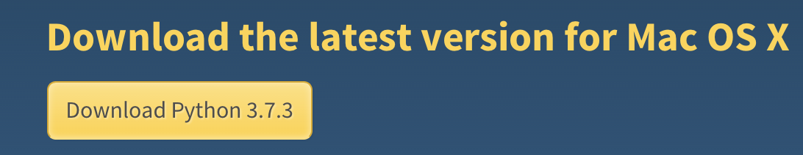
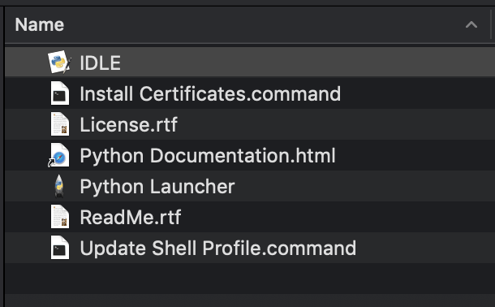

This first tutorial will cover how to get Python installed on your computer and setting up your coding environment. I will be targeting Mac, but the instructions are identical for Windows.
This process is very easy, and certainly the most important.
The first step, of course, is to go here and click this shiny button:
This will download the installer to your computer. Open that file and follow the prompts. I won't insult your intelligence and leave this part to you.
Congratulations, you now have Python! You should now be presented with the following files:
I'll quickly go over the files that you see here:
| IDLE | Potentially your new best friend. This is an interactive environment for writing and executing Python. |
|---|---|
| Install Certificates.command | This file will execute a command on your computer to install specially-curated SSL root certificates. You shouldn't have to worry about this now. |
| Python Documentation.html | Self-explanatory, opens the documentation for Python in a web browser. Highly recommend reading this some time. |
| Python Launcher | This file is solely for your computer to run, don't worry about it. |
| README.rtf | Arguably the most important file in any software project. Gives you some useful info about Python. |
| Update Shell Profile.command | Makes sure that Python is opened when you type "python" in a shell window. If you wish to use the terminal (more on this below), run this. |
This next part is the fun part. This is where you decide where you want to develop.
You can stick with IDLE as it lets you create scripts as well as interactively execute code. You also get handy suggestions as you type.
Any text editor or IDE will work just fine. I know that Atom is a very popular one as it's gorgeous, simple, and extendible.
Personally, if I'm not using the built-in Terminal program, I use PyCharm. But that may be a little overkill for a beginner and it can be a bit overwhelming.
After you decide on an editor, we're all set! Sweet!!
Photographs by NASA on The Commons.